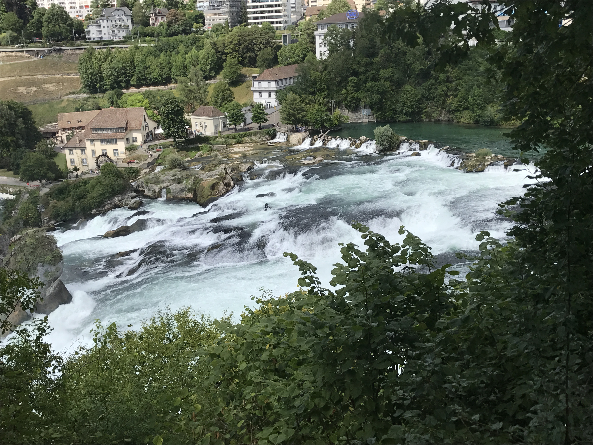

Junfraujoch
♥ ♥ ♥ ♥ ♡
Zelf ben ik er geweest toen ik 15 jaar was, ik herriner mij nog goed hoe mooi alles daar was en
zeker nog de kou ondanks dat het hartje zomer was. Het is zeker een aanrader om heen te gaan het
uitzicht en de ervaring zijn geen woorden voor om die te beschrijven.
Jungfraujoch, ook wel bekend als de "Top of Europe," is een spectaculaire bergpas gelegen in de
Zwitserse Alpen. Junfrau bied adembenemende panoramische uitzichten op de omliggende besneeuwde
bergtoppen, gletsjers en diepe valleien.
Meer informatie

De Aletschgletsjer
♥ ♥ ♥ ♥ ♥
Deze zomer heb ik samen met mijn vriend de gletsjer bezocht, het was een prachtig uitzicht over
alle bergen daar en het ijs van de gletsjer, helaas was er weinig eewige sneeuw te zien dus ik
zou zeker aan raden voor de echte zomer er heen te gaan. Je gaat er wel met een kabelbaan omhoog
dus dat is iets om rekening mee te houden als je hoogte vrees hebt. En als je daar wil hiken doe
dat zeker niet zonder gids!
De Aletschgletsjer, gelegen in de Zwitserse Alpen, is de grootste gletsjer van Europa en een
indrukwekkend iets om te zien.
Meer informatie

De Rheinfall
♥ ♥ ♥ ♡ ♡
Ook de Rheinfall heb ik op mijn 15e al bezocht ze prachtige waterval, gelegen in Schaffhausen
Zwitserland en is onderdeel van de Rijn. Iets wat de naam mogelijk al verklapte.
Bezoekers kunnen de waterval vanaf verschillende uitkijkpunten bewonderen, zowel vanaf de oever
als vanaf een boottocht die dichtbij de waterval komt. Een van de meest opvallende kenmerken van
de Rheinfall is de rots in het midden van de waterval, bekend als de "Middenrots", die de stroom
van de Rijn in tweeën splitst en bijdraagt aan het adembenemende uitzicht.
Meer informatie